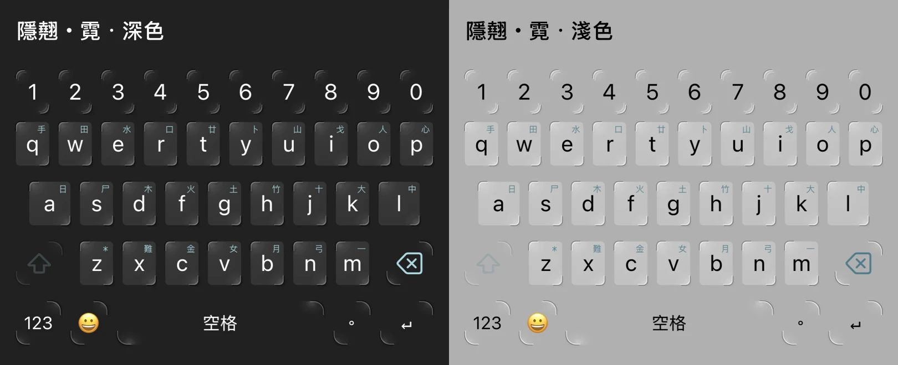
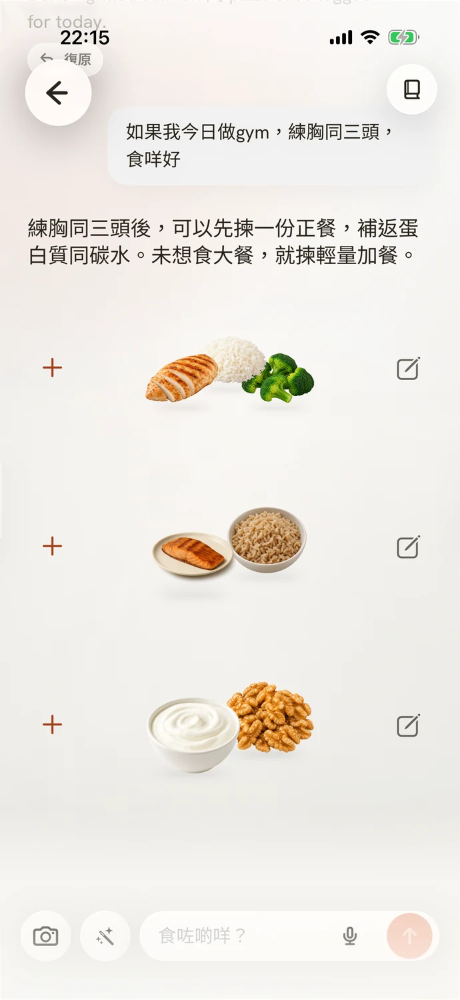
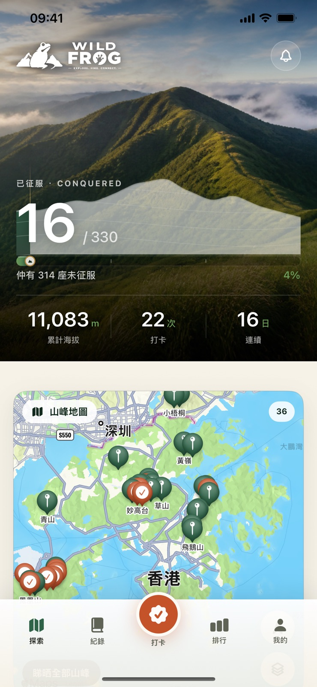
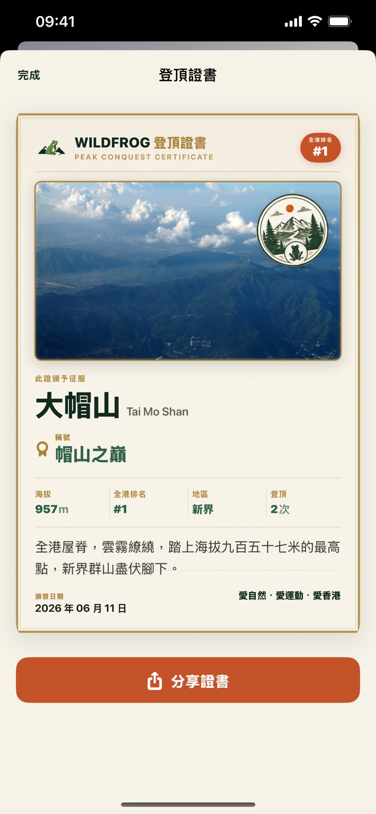
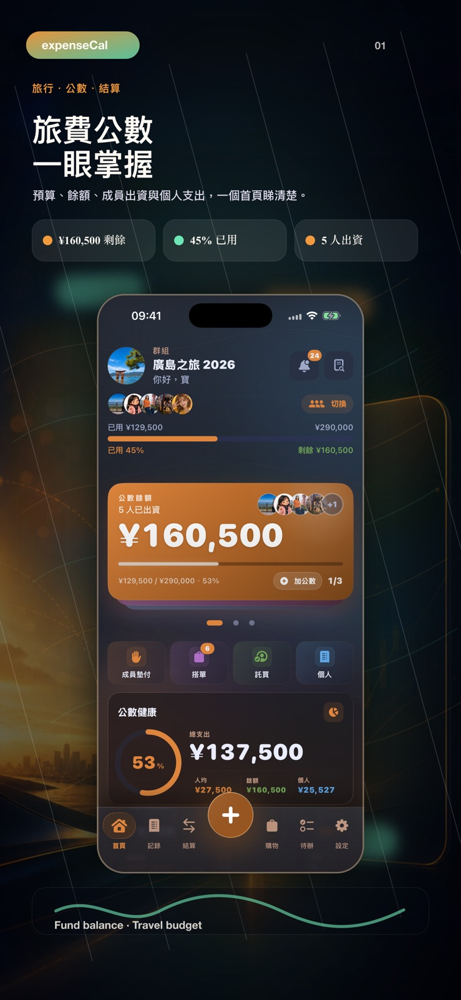
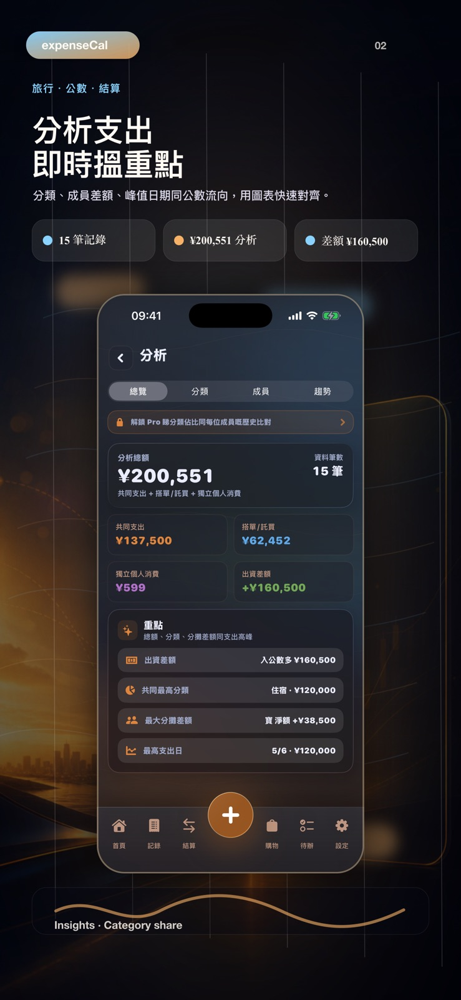
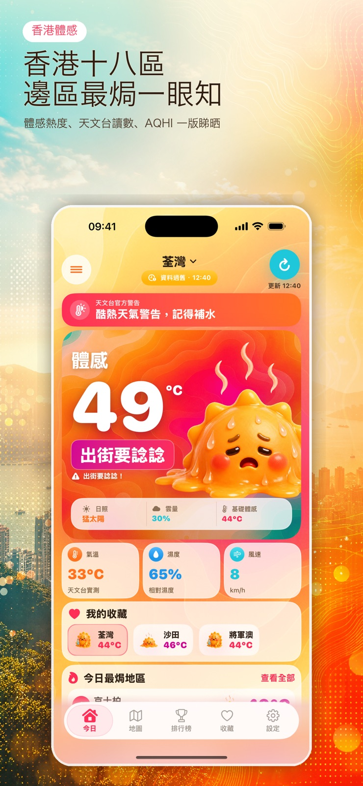
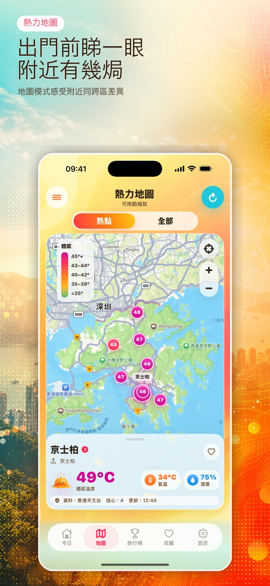
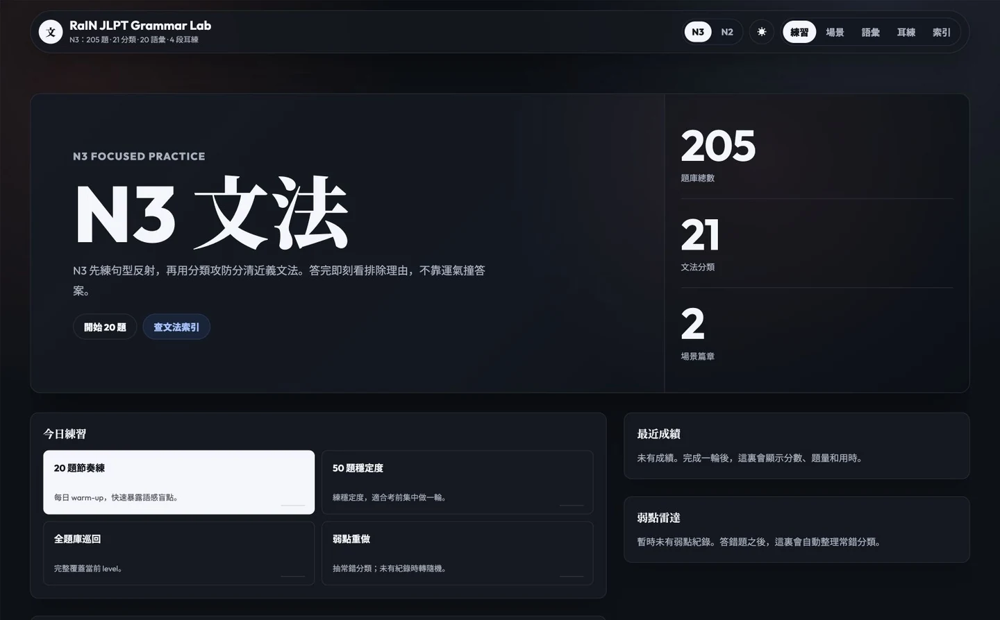

KOI Keyboard
Five Chinese input modes, English in the same flow. Tap, glide, write by hand — with a keyboard that feels like yours.
iOS · CANTONESE-FIRST · CUSTOM THEMES
ACT 00 — DEPARTURE
SCROLL TO EXPLORE
A SMALL STUDIO. AN OPEN UNIVERSE.
A Hong Kong studio turning curious ideas into
considered apps, websites and digital experiences.
01 — THE APPROACH
Small studio, heavy pull. We take rough ideas and compress them until they shine — iOS apps, web tools, automation, brand systems. Polished until they feel inevitable.
設計から実装、運用まで、一貫して。
02 — IN ORBIT
Useful tools. Playful experiments.
Made with a point of view.
Updated September 2026
01 / 09

Five Chinese input modes, English in the same flow. Tap, glide, write by hand — with a keyboard that feels like yours.
iOS · CANTONESE-FIRST · CUSTOM THEMES

Tell Bao what you ate, in your own words. A Cantonese food journal that brings meals, portions and nutrition into one conversation.
iOS · CONVERSATIONAL FOOD LOG


Hong Kong's 330 peaks, one trail at a time. GPS check-ins, summit certificates and a growing collection of mountain memories.
iOS · 330 PEAKS · v1.0.9


Keep group trips fair. Shared funds, multi-currency expenses, shopping lists and clear settlements — together in one place.
GROUP EXPENSES · MULTI-CURRENCY


How does Hong Kong feel today? Eighteen-district heat, air quality, a live heat map and a little character for every kind of weather.
iOS · 18 DISTRICTS · v1.5
Five subjects, one little learning world. Illustrated flashcards, focused practice and quick quizzes make room for a little progress every day.
WEB · 中文 / ENGLISH / MATH / SCIENCE / HUMANITIES

An early exploration of shared agreements, clear consent and making expectations visible.
iOS CONCEPT · RELATIONSHIPS

310 N3 and N2 grammar drills, plus vocabulary, listening and focused practice for the points that need another look.
WEB · N3 / N2 · 310 DRILLS
SOURCES → FINDINGS → DECISIONS
CSV, chat-log and Excel analysis with a designer's output. Sources, findings and a clear next step.
ON REQUEST · RESEARCH / REPORTS
03 — TIME DILATION
That's where we work. Deep in the gravity well of a problem — small habits, shipping discipline, craft that compounds. One hour here is a launch out there.
×1.31 AND CLIMBING
04 — EVENT HORIZON
⚠ 1.5 rs TO PHOTON SPHERE
05 — ESCAPE VELOCITY
New commissions, partnerships, advisory. Send a brief — we reply within one business day.
hello@rainsday.com